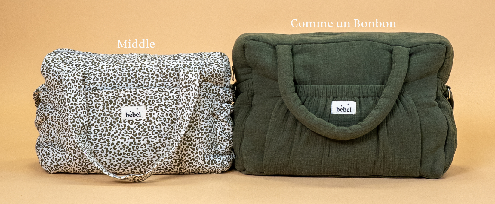

Les matières des meilleurs sacs à langer
Le choix de la matière influence directement le confort, la résistance et l’entretien du sac à langer .
- Double gaze de coton : Très douce et légère, offrant un toucher agréable tout en restant respirante. Idéale pour les parents recherchant un sac souple et naturel.
- Tissu imperméable : Parfait pour affronter les imprévus du quotidien, protégeant efficacement le contenu du sac tout en étant facile à nettoyer.
- Gaze de coton Effet lin : Apporte une touche intemporelle, alliant robustesse et légèreté.
- Imprimé : Une option tendance pour les parents souhaitant allier praticité et style audacieux.
Les meilleurs sacs à langer pour chaque mode de vie
Le sac à langer idéal dépend de votre mode de vie et de vos besoins spécifiques. Pour un quotidien urbain et des déplacements fréquents en ville le Middle ou Comme Un Bonbon offrent un format compact et pratique idéal pour un accès rapide aux essentiels. Pour les week-ends le 24/48H est parfait pour transporter tout le nécessaire sans être encombré.

Les sacs à dos et bananes à langer sont parfaits pour les parents actifs qui ont besoin de garder les mains libres tout en transportant tout le nécessaire pour bébé. Si vous utilisez une poussette tous les sacs peuvent y être suspendus grâces à nos attaches poussettes universelles. Le Mini possède même des attaches poussettes intégrées pour devenir un véritable organisateur de poussette.
Ces modèles peuvent être réutilisés comme sacs polyvalents accompagnant les parents bien au-delà des premières années de bébé.
Finalement le choix du meilleur sac à langer dépend de plusieurs critères essentiels :
- La matière :Elle influence le confort et la durabilité du sac.
- La contenance :Un format adapté selon la quantité d’affaires à transporter.
- Le mode de vie : Un sac compact pour les déplacements urbains, un modèle spacieux pour les voyages ou au contraire minimaliste pour les aventures..
- Les goûts : Un design qui correspond aux préférences esthétiques des parents.
Chez bebel nous proposons une gamme variée pour répondre à tous ces critères.
Découvrez notre collection et trouvez le sac à langer qui vous accompagnera au quotidien en testant notre quizz ”. Quel sac à langer est fait pour moi ?